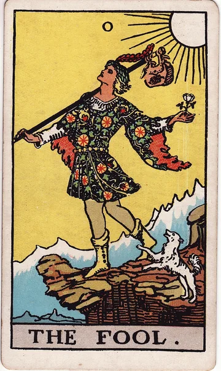
愚者大阿爾克那 0｜開始
自由、開始、冒險
象徵懸崖邊的青年，一隻腳已經踏出去，狗在後面叫。他不是不怕，是還沒學會怕——所以這種勇氣最乾淨，也最容易摔。
正位你正站在起點，還沒被規則綁住；先踏出一步，路會自己長出來。
逆位不是不能衝，是你還沒想清楚要什麼；先停下來問自己一次。
每張牌長什麼樣、象徵什麼、正位與逆位怎麼讀。
先看前面的讀法，再往下翻牌；也可以直接搜尋。
大阿爾克那 22 張（0～XXI）講的是人生的大主題：開始、選擇、崩解、完成。小阿爾克那 56 張分成四花色，講日常的細節：今天、這段關係、這筆錢。
一＝種子、二＝選擇、三＝初成果、四＝守成、五＝摩擦、六＝回報、七＝盤點、八＝專注、九＝快完成、十＝到頂。
宮廷牌：侍者剛入門、騎士已上路、皇后會照顧、國王做決定。
正位＝這股能量正在發生。逆位不等於壞事，通常是「卡住、過度、還沒準備好，或往內走」。看到逆位先問一句：是太少，還是太多？
本站抽牌用「過去／現在／未來」：過去是你帶著什麼進來、現在是真正的狀態與卡點、未來是照現在這樣走的趨勢（不是命定）。三張要串成一句話，不要分開解。
從 0 號愚者走到 XXI 世界，是一條完整的路：先上路、學會選擇、遇到崩解，最後收尾。

自由、開始、冒險
象徵懸崖邊的青年，一隻腳已經踏出去，狗在後面叫。他不是不怕，是還沒學會怕——所以這種勇氣最乾淨，也最容易摔。
正位你正站在起點，還沒被規則綁住；先踏出一步，路會自己長出來。
逆位不是不能衝，是你還沒想清楚要什麼；先停下來問自己一次。
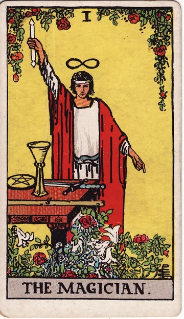
行動、資源、創造
象徵桌上擺著杖、杯、劍、幣四樣工具，他一手指天一手點地，意思是：上頭的想法要真的落到地上，才算數。
正位你手上的工具已經夠了，差的是開始動手。
逆位講得比做得多；收斂到一件事上，成果才會出現。
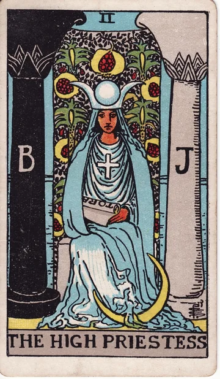
直覺、靜默、內在知識
象徵坐在兩根柱子中間，身後是石榴簾幕，手上的卷軸只露出一角。她知道得比說出來的多，因為有些事一說破就不準了。
正位答案在心裡，不在別人的意見裡；安靜下來就會聽到。
逆位你其實知道不對勁，只是不想承認；先承認，再決定。
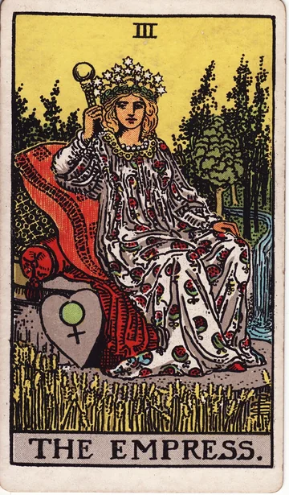
豐盛、照顧、創造力
象徵麥田、森林、流水，她坐在豐收裡面。這張牌講的不是浪漫，是「照顧」與「讓它長大」需要時間。
正位現在適合滋養：照顧身體、關係或一個正在長大的計畫。
逆位照顧別人之前先照顧自己，否則你會空掉。
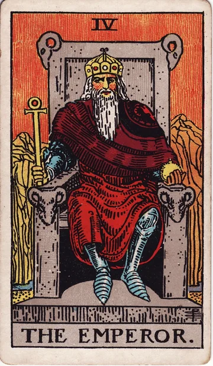
秩序、界線、掌控
象徵石頭王座、盔甲、腳邊的山羊頭。他代表規矩、界線，還有那句最難說出口的話：「這件事我負責。」
正位需要規矩與結構；把模糊的事定下規則，事情就穩了。
逆位抓太緊反而失去；放掉一個你不該管的事。
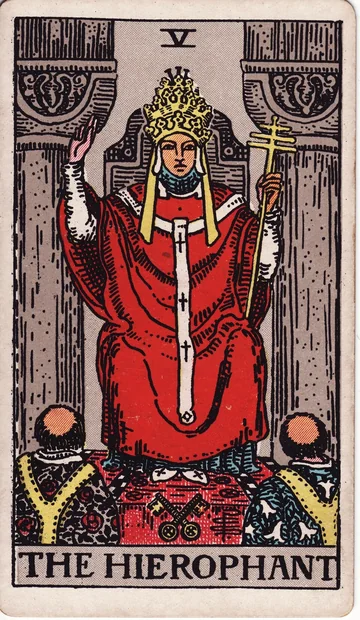
傳統、學習、指引
象徵兩名信徒跪在階下，他把鑰匙交出去。象徵傳承：有些東西不必自己重新發明，問對人比想破頭快。
正位找有經驗的人問，或回到基本功；不必自己重新發明。
逆位別人的方法不一定適合你；聽，但自己判斷。
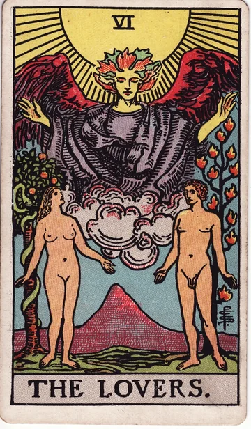
選擇、連結、價值一致
象徵伊甸園裡的兩個人與天上的天使。重點其實不是愛情，是「選擇」——你選的那邊，得跟你的價值觀對得上。
正位這是一個選擇題：選讓你價值觀舒服的那邊。
逆位不選也是一種選擇，而且通常最痛。
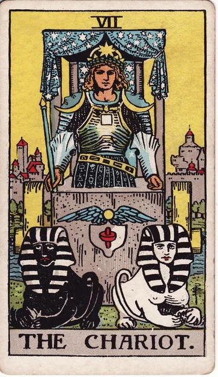
前進、意志、掌控方向
象徵兩隻人面獅身獸拉著車，一黑一白。牠們往不同方向走，卻同時被你駕住——這就是意志。
正位方向對了就加速；現在需要的是決心不是完美計畫。
逆位油門踩太滿會翻車；先確認方向盤是你在握。
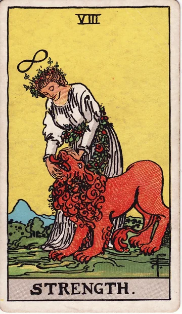
勇氣、耐心、溫柔的堅持
象徵女子輕輕按住獅子的嘴，沒有武器。她不是壓制，是安撫；溫柔比蠻力更難，也更持久。
正位不是硬碰硬，是用穩定把局面慢慢扳回來。
逆位你已經很累了，先補血再談堅持。
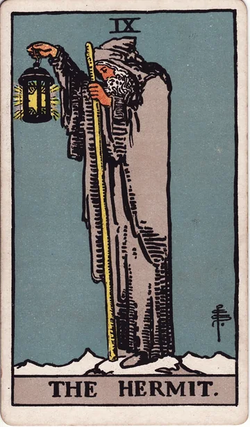
獨處、反思、找自己的光
象徵提著燈站在雪地高處，燈裡只有一顆星。光只照得到下一步，所以只能走一步看一步。
正位現在適合退一步，一個人想清楚，不必急著回訊息。
逆位獨處是為了回來，不是為了消失；設一個回程時間。
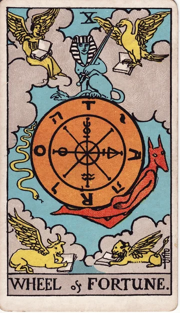
轉折、循環、時機
象徵輪子上三個生物隨輪轉動：往上、到頂、往下。局面會轉，你能決定的只有自己怎麼站。
正位局面正在轉，順勢比硬撐有效。
逆位同樣的坑又出現，代表課題還沒學完。
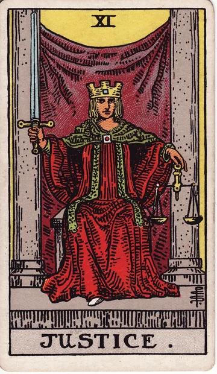
平衡、因果、誠實
象徵一手劍、一手天秤。劍切開事實，秤量責任；這張牌不談運氣，只談「有沒有做到」。
正位該講清楚的就講清楚；公平會回來找你。
逆位先檢查自己有沒有做到你要求別人的標準。
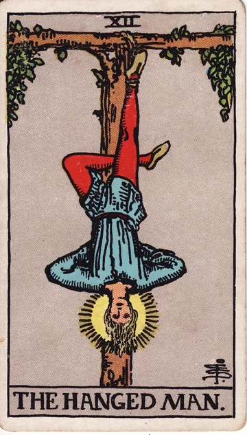
暫停、換角度、放下
象徵自願倒吊在樹上，表情卻是平靜的。換一個角度看世界，是主動的選擇，不是懲罰。
正位卡住不是壞事，是逼你換一個看法。
逆位停太久就變藉口；給自己一個期限。
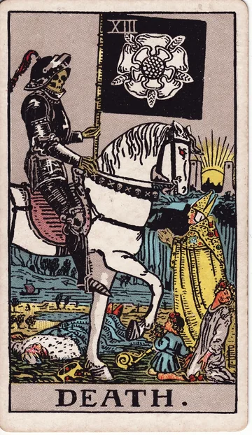
結束、蛻變、斷捨離
象徵白馬上的骸骨走過人群，遠方太陽正在升起。結束與開始是同一件事，只是我們通常只看到前面那半。
正位某件事該結束了；結束才有下一個開始。
逆位你不放手，新東西進不來。
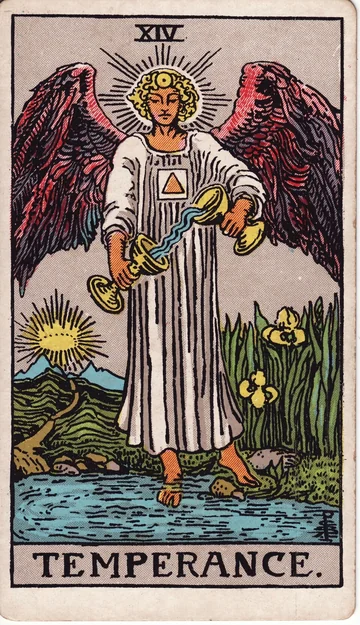
調和、節奏、適量
象徵天使把水從一杯倒到另一杯，水沒有灑出來。這張牌講比例、節奏，還有「剛剛好」。
正位找到中間值：不用極端，穩定比爆發有效。
逆位你最近某件事做過頭了；減量。
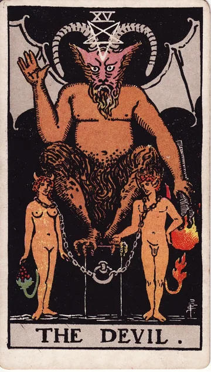
慾望、執著、綁住
象徵兩個被鏈住的人，鍊子鬆得可以自己拿下來。真正綁住你的通常不是別人，是你捨不得放的那個習慣。
正位看清楚是什麼在控制你：習慣、關係、還是恐懼。
逆位你已經看到鎖鏈了，而且它其實沒上鎖。
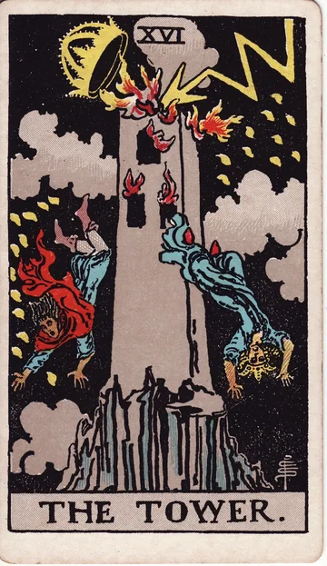
崩解、真相、劇變
象徵閃電打中塔頂，王冠掉下來、人往下墜。倒掉的都是本來就不穩的東西——痛，但誠實。
正位有些東西會倒，但倒掉的是本來就不穩的。
逆位越撐越痛；讓它倒，重建會更快。
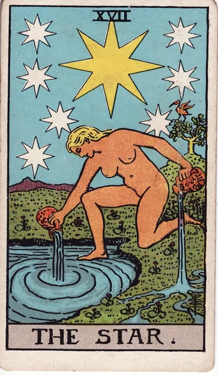
希望、療癒、方向感
象徵女子在池邊倒水，天上有八顆星。這是災後重建的第一口氣：不熱鬧，但方向是對的。
正位慢慢來，方向是對的；現在需要的是相信。
逆位不是沒希望，是你太累了；先睡一覺。
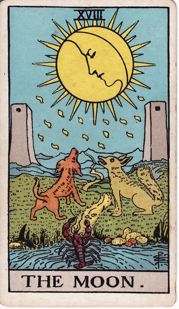
潛意識、不安、看不清
象徵兩隻狗對著月亮叫，路在水裡若隱若現。看不清的時候不要硬走，這張牌在提醒你等霧散。
正位現在資訊不完整，不要做大決定。
逆位你擔心的多半是自己想出來的；去問清楚。
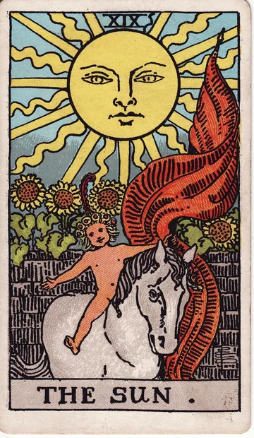
成功、清晰、活力
象徵孩子騎著白馬，向日葵在牆後盛開。最直接的一張牌：事情就是好，不用想太多。
正位事情會往好的方向走；大方一點，別客氣。
逆位差一點點，不要在這個時候放棄。
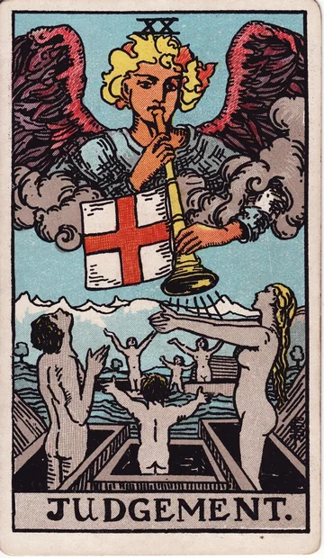
覺醒、召喚、總結
象徵號角響起，人們從棺木裡起身。象徵總結與回應召喚：過去的事會回來告訴你答案。
正位該做總結了；過去的事會回來給你答案。
逆位不要再等「準備好」，你已經準備很久了。
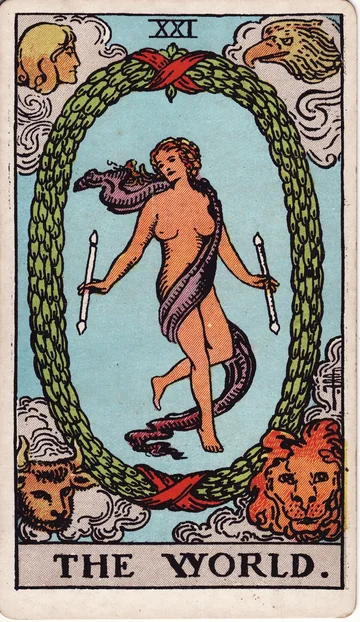
完成、整合、圓滿
象徵舞者在花環裡，四角落四隻生物。一圈走完了，可以驗收，也可以往下一個循環走。
正位一個階段完成了；可以驗收，也可以往下一個循環走。
逆位只差收尾；把它做完，不要留尾巴。
火是行動與熱情：想做、想衝、想被看見。權杖牌組講的通常是「你要不要動」。
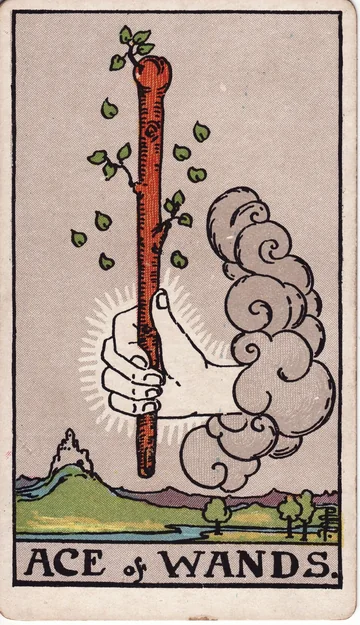
新的開始
象徵火是行動與熱情：想做、想衝、想被看見。權杖牌組講的通常是「你要不要動」。一顆剛掉下來的種子，還沒有形狀，但潛力最滿。
正位行動與熱情上的新的開始：一個新的機會剛出現，先接住它。
逆位機會還沒成形，先別急著投入。
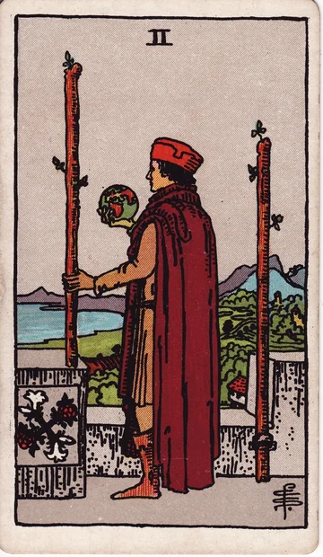
選擇與平衡
象徵火是行動與熱情：想做、想衝、想被看見。權杖牌組講的通常是「你要不要動」。兩邊各站一個選擇，你正在秤哪一邊比較重。
正位行動與熱情上的選擇與平衡：兩邊拉扯，需要你做出取捨。
逆位猶豫太久，兩邊都會失去。
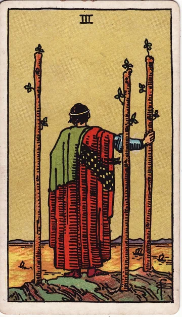
初步成果
象徵火是行動與熱情：想做、想衝、想被看見。權杖牌組講的通常是「你要不要動」。第一個成果出現了，開始有人回應你。
正位行動與熱情上的初步成果：已有小成果，可以往下擴張。
逆位基礎還沒穩，先別擴張。
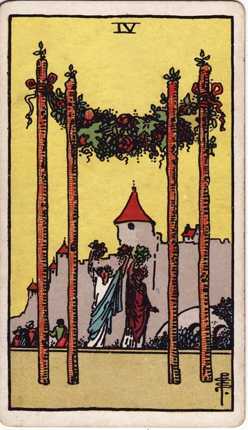
穩定與界線
象徵火是行動與熱情：想做、想衝、想被看見。權杖牌組講的通常是「你要不要動」。把門關起來，先守住現有的東西。
正位行動與熱情上的穩定與界線：先守住現有的，別急著改變。
逆位太保守會錯過時機。
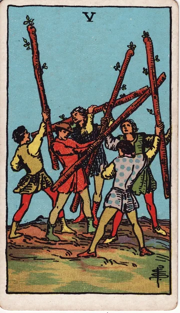
衝突與失落
象徵火是行動與熱情：想做、想衝、想被看見。權杖牌組講的通常是「你要不要動」。走過一段泥地：損失與摩擦同時發生。
正位行動與熱情上的衝突與失落：有摩擦，但摩擦會指出真正的問題。
逆位低潮快過了，別在此時做決定。
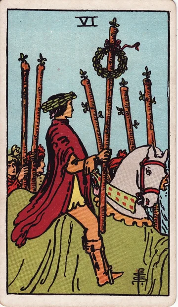
回饋與流動
象徵火是行動與熱情：想做、想衝、想被看見。權杖牌組講的通常是「你要不要動」。開始收到回報，也有人願意給你。
正位行動與熱情上的回饋與流動：付出開始有回報，接受它。
逆位單向付出，該停損了。
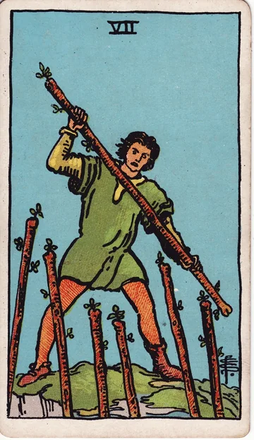
評估與等待
象徵火是行動與熱情：想做、想衝、想被看見。權杖牌組講的通常是「你要不要動」。停下來盤點：種下去的到底長出多少。
正位行動與熱情上的評估與等待：先評估再動，別憑感覺衝。
逆位想太久會錯過窗口。
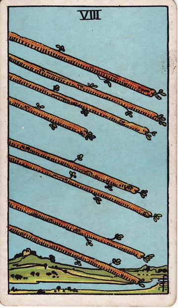
專注與推進
象徵火是行動與熱情：想做、想衝、想被看見。權杖牌組講的通常是「你要不要動」。低頭重複做同一件事，直到它變成能力。
正位行動與熱情上的專注與推進：集中火力，一次做一件事。
逆位分心是現在最大的敵人。
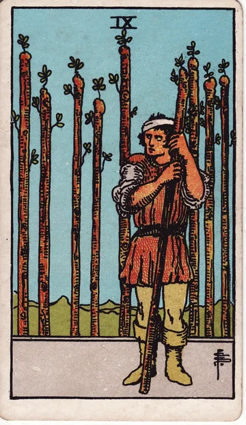
接近完成
象徵火是行動與熱情：想做、想衝、想被看見。權杖牌組講的通常是「你要不要動」。一個人站在成果前面，離終點只差最後一步。
正位行動與熱情上的接近完成：已經很接近了，撐住最後一段。
逆位疲乏讓你快放棄，先休息。
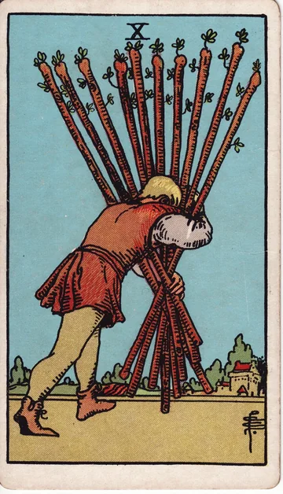
完成與承擔
象徵火是行動與熱情：想做、想衝、想被看見。權杖牌組講的通常是「你要不要動」。責任到頂了，該收成，或該交棒。
正位行動與熱情上的完成與承擔：責任已到頂點，該收成或交棒。
逆位扛太多了，分一些出去。
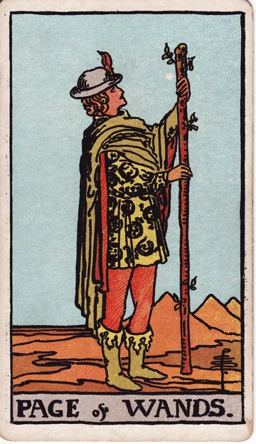
學習與好奇
象徵火是行動與熱情：想做、想衝、想被看見。權杖牌組講的通常是「你要不要動」。剛入門，什麼都想試，還在學規矩。
正位行動與熱情上的學習與好奇：用新手的心態去試，會學很快。
逆位只想不做，或在等別人給答案。
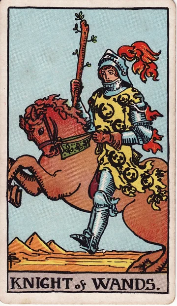
行動與追求
象徵火是行動與熱情：想做、想衝、想被看見。權杖牌組講的通常是「你要不要動」。已經上路，速度很快，方向感還在抓。
正位行動與熱情上的行動與追求：該動了，行動會帶來答案。
逆位衝動行事，容易半途而廢。
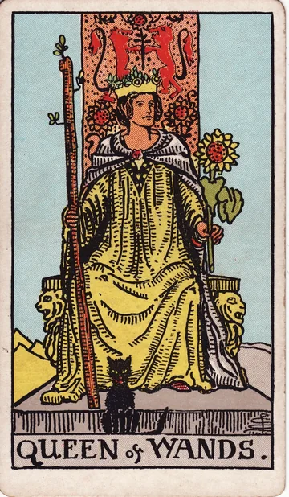
照顧與成熟
象徵火是行動與熱情：想做、想衝、想被看見。權杖牌組講的通常是「你要不要動」。把場面照顧好，靠的是經驗不是力氣。
正位行動與熱情上的照顧與成熟：用成熟的方式處理，柔軟比強硬有效。
逆位過度付出或情緒化，先穩住自己。
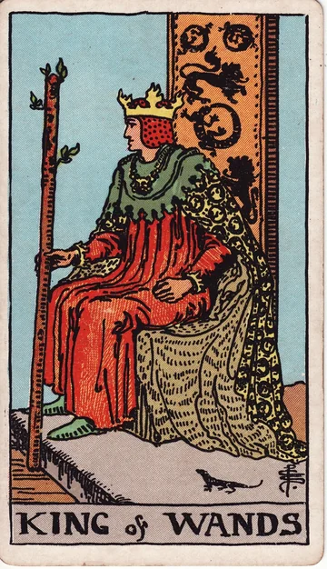
掌控與承諾
象徵火是行動與熱情：想做、想衝、想被看見。權杖牌組講的通常是「你要不要動」。做最後決定，也承擔結果。
正位行動與熱情上的掌控與承諾：拿出主導權，為決定負責。
逆位控制欲太強或逃避責任。
水是情感與關係：感受、連結、失落。聖杯牌組講的通常是「你心裡怎麼了」。
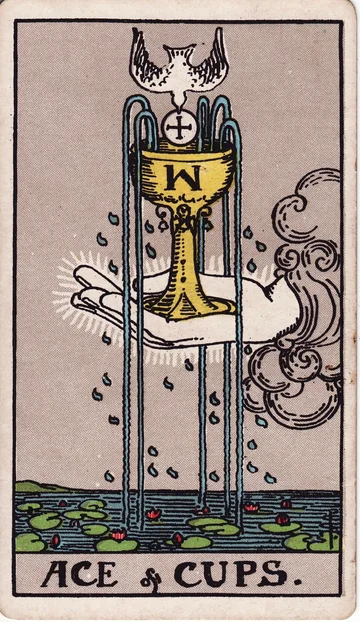
新的開始
象徵水是情感與關係：感受、連結、失落。聖杯牌組講的通常是「你心裡怎麼了」。一顆剛掉下來的種子，還沒有形狀，但潛力最滿。
正位情感與關係上的新的開始：一個新的機會剛出現，先接住它。
逆位機會還沒成形，先別急著投入。
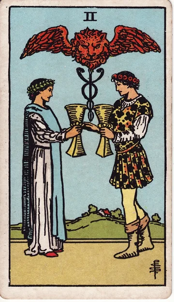
選擇與平衡
象徵水是情感與關係：感受、連結、失落。聖杯牌組講的通常是「你心裡怎麼了」。兩邊各站一個選擇，你正在秤哪一邊比較重。
正位情感與關係上的選擇與平衡：兩邊拉扯，需要你做出取捨。
逆位猶豫太久，兩邊都會失去。
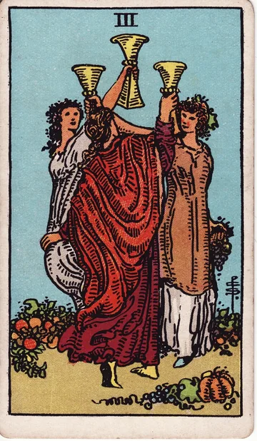
初步成果
象徵水是情感與關係：感受、連結、失落。聖杯牌組講的通常是「你心裡怎麼了」。第一個成果出現了，開始有人回應你。
正位情感與關係上的初步成果：已有小成果，可以往下擴張。
逆位基礎還沒穩，先別擴張。
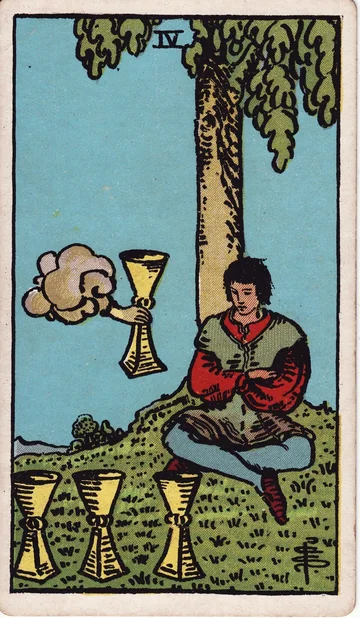
穩定與界線
象徵水是情感與關係：感受、連結、失落。聖杯牌組講的通常是「你心裡怎麼了」。把門關起來，先守住現有的東西。
正位情感與關係上的穩定與界線：先守住現有的，別急著改變。
逆位太保守會錯過時機。
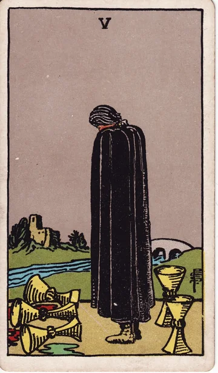
衝突與失落
象徵水是情感與關係：感受、連結、失落。聖杯牌組講的通常是「你心裡怎麼了」。走過一段泥地：損失與摩擦同時發生。
正位情感與關係上的衝突與失落：有摩擦，但摩擦會指出真正的問題。
逆位低潮快過了，別在此時做決定。
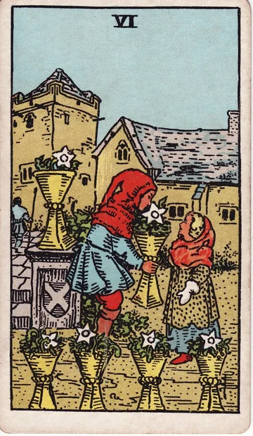
回饋與流動
象徵水是情感與關係：感受、連結、失落。聖杯牌組講的通常是「你心裡怎麼了」。開始收到回報，也有人願意給你。
正位情感與關係上的回饋與流動：付出開始有回報，接受它。
逆位單向付出，該停損了。
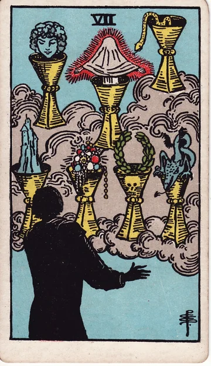
評估與等待
象徵水是情感與關係：感受、連結、失落。聖杯牌組講的通常是「你心裡怎麼了」。停下來盤點：種下去的到底長出多少。
正位情感與關係上的評估與等待：先評估再動，別憑感覺衝。
逆位想太久會錯過窗口。
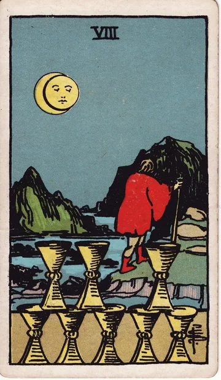
專注與推進
象徵水是情感與關係：感受、連結、失落。聖杯牌組講的通常是「你心裡怎麼了」。低頭重複做同一件事，直到它變成能力。
正位情感與關係上的專注與推進：集中火力，一次做一件事。
逆位分心是現在最大的敵人。
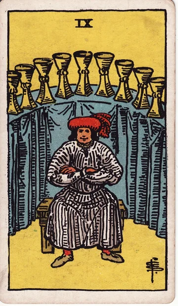
接近完成
象徵水是情感與關係：感受、連結、失落。聖杯牌組講的通常是「你心裡怎麼了」。一個人站在成果前面，離終點只差最後一步。
正位情感與關係上的接近完成：已經很接近了，撐住最後一段。
逆位疲乏讓你快放棄，先休息。
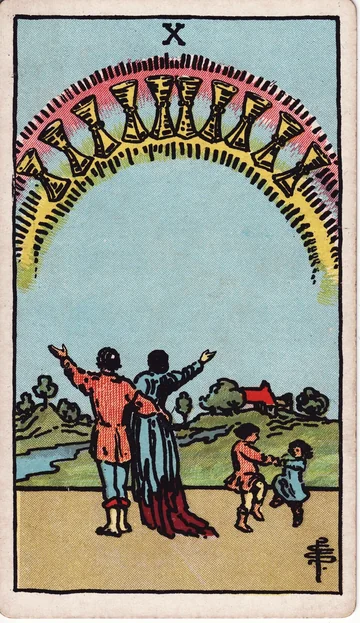
完成與承擔
象徵水是情感與關係：感受、連結、失落。聖杯牌組講的通常是「你心裡怎麼了」。責任到頂了，該收成，或該交棒。
正位情感與關係上的完成與承擔：責任已到頂點，該收成或交棒。
逆位扛太多了，分一些出去。
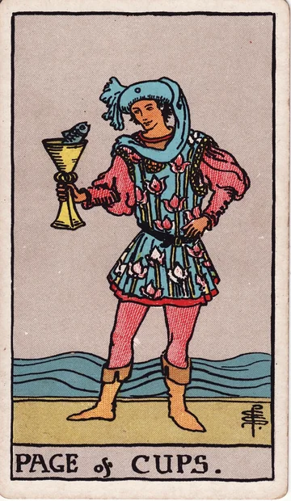
學習與好奇
象徵水是情感與關係：感受、連結、失落。聖杯牌組講的通常是「你心裡怎麼了」。剛入門，什麼都想試，還在學規矩。
正位情感與關係上的學習與好奇：用新手的心態去試，會學很快。
逆位只想不做，或在等別人給答案。
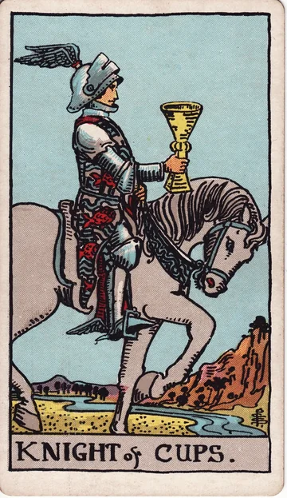
行動與追求
象徵水是情感與關係：感受、連結、失落。聖杯牌組講的通常是「你心裡怎麼了」。已經上路，速度很快，方向感還在抓。
正位情感與關係上的行動與追求：該動了，行動會帶來答案。
逆位衝動行事，容易半途而廢。
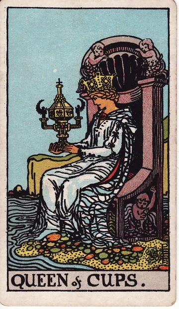
照顧與成熟
象徵水是情感與關係：感受、連結、失落。聖杯牌組講的通常是「你心裡怎麼了」。把場面照顧好，靠的是經驗不是力氣。
正位情感與關係上的照顧與成熟：用成熟的方式處理，柔軟比強硬有效。
逆位過度付出或情緒化，先穩住自己。
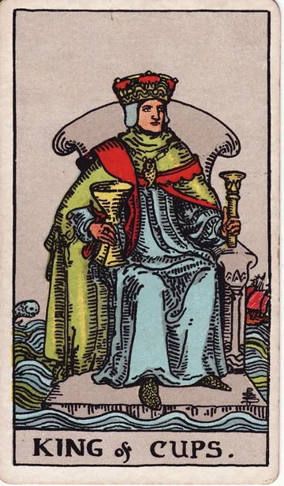
掌控與承諾
象徵水是情感與關係：感受、連結、失落。聖杯牌組講的通常是「你心裡怎麼了」。做最後決定，也承擔結果。
正位情感與關係上的掌控與承諾：拿出主導權，為決定負責。
逆位控制欲太強或逃避責任。
風是思考與溝通：判斷、衝突、真相。寶劍牌組講的通常是「你怎麼想、怎麼說」。
新的開始
象徵風是思考與溝通：判斷、衝突、真相。寶劍牌組講的通常是「你怎麼想、怎麼說」。一顆剛掉下來的種子，還沒有形狀，但潛力最滿。
正位思考與溝通上的新的開始：一個新的機會剛出現，先接住它。
逆位機會還沒成形，先別急著投入。
選擇與平衡
象徵風是思考與溝通：判斷、衝突、真相。寶劍牌組講的通常是「你怎麼想、怎麼說」。兩邊各站一個選擇，你正在秤哪一邊比較重。
正位思考與溝通上的選擇與平衡：兩邊拉扯，需要你做出取捨。
逆位猶豫太久，兩邊都會失去。
初步成果
象徵風是思考與溝通：判斷、衝突、真相。寶劍牌組講的通常是「你怎麼想、怎麼說」。第一個成果出現了，開始有人回應你。
正位思考與溝通上的初步成果：已有小成果，可以往下擴張。
逆位基礎還沒穩，先別擴張。
穩定與界線
象徵風是思考與溝通：判斷、衝突、真相。寶劍牌組講的通常是「你怎麼想、怎麼說」。把門關起來，先守住現有的東西。
正位思考與溝通上的穩定與界線：先守住現有的，別急著改變。
逆位太保守會錯過時機。
衝突與失落
象徵風是思考與溝通：判斷、衝突、真相。寶劍牌組講的通常是「你怎麼想、怎麼說」。走過一段泥地：損失與摩擦同時發生。
正位思考與溝通上的衝突與失落：有摩擦，但摩擦會指出真正的問題。
逆位低潮快過了，別在此時做決定。
回饋與流動
象徵風是思考與溝通：判斷、衝突、真相。寶劍牌組講的通常是「你怎麼想、怎麼說」。開始收到回報，也有人願意給你。
正位思考與溝通上的回饋與流動：付出開始有回報，接受它。
逆位單向付出，該停損了。
評估與等待
象徵風是思考與溝通：判斷、衝突、真相。寶劍牌組講的通常是「你怎麼想、怎麼說」。停下來盤點：種下去的到底長出多少。
正位思考與溝通上的評估與等待：先評估再動，別憑感覺衝。
逆位想太久會錯過窗口。
專注與推進
象徵風是思考與溝通：判斷、衝突、真相。寶劍牌組講的通常是「你怎麼想、怎麼說」。低頭重複做同一件事，直到它變成能力。
正位思考與溝通上的專注與推進：集中火力，一次做一件事。
逆位分心是現在最大的敵人。
接近完成
象徵風是思考與溝通：判斷、衝突、真相。寶劍牌組講的通常是「你怎麼想、怎麼說」。一個人站在成果前面，離終點只差最後一步。
正位思考與溝通上的接近完成：已經很接近了，撐住最後一段。
逆位疲乏讓你快放棄，先休息。
完成與承擔
象徵風是思考與溝通：判斷、衝突、真相。寶劍牌組講的通常是「你怎麼想、怎麼說」。責任到頂了，該收成，或該交棒。
正位思考與溝通上的完成與承擔：責任已到頂點，該收成或交棒。
逆位扛太多了，分一些出去。
學習與好奇
象徵風是思考與溝通：判斷、衝突、真相。寶劍牌組講的通常是「你怎麼想、怎麼說」。剛入門，什麼都想試，還在學規矩。
正位思考與溝通上的學習與好奇：用新手的心態去試，會學很快。
逆位只想不做，或在等別人給答案。
行動與追求
象徵風是思考與溝通：判斷、衝突、真相。寶劍牌組講的通常是「你怎麼想、怎麼說」。已經上路，速度很快，方向感還在抓。
正位思考與溝通上的行動與追求：該動了，行動會帶來答案。
逆位衝動行事，容易半途而廢。
照顧與成熟
象徵風是思考與溝通：判斷、衝突、真相。寶劍牌組講的通常是「你怎麼想、怎麼說」。把場面照顧好，靠的是經驗不是力氣。
正位思考與溝通上的照顧與成熟：用成熟的方式處理，柔軟比強硬有效。
逆位過度付出或情緒化，先穩住自己。
掌控與承諾
象徵風是思考與溝通：判斷、衝突、真相。寶劍牌組講的通常是「你怎麼想、怎麼說」。做最後決定，也承擔結果。
正位思考與溝通上的掌控與承諾：拿出主導權，為決定負責。
逆位控制欲太強或逃避責任。
土是現實與資源：錢、身體、時間。錢幣牌組講的通常是「現實條件夠不夠」。
新的開始
象徵土是現實與資源：錢、身體、時間。錢幣牌組講的通常是「現實條件夠不夠」。一顆剛掉下來的種子，還沒有形狀，但潛力最滿。
正位現實與資源上的新的開始：一個新的機會剛出現，先接住它。
逆位機會還沒成形，先別急著投入。
選擇與平衡
象徵土是現實與資源：錢、身體、時間。錢幣牌組講的通常是「現實條件夠不夠」。兩邊各站一個選擇，你正在秤哪一邊比較重。
正位現實與資源上的選擇與平衡：兩邊拉扯，需要你做出取捨。
逆位猶豫太久，兩邊都會失去。
初步成果
象徵土是現實與資源：錢、身體、時間。錢幣牌組講的通常是「現實條件夠不夠」。第一個成果出現了，開始有人回應你。
正位現實與資源上的初步成果：已有小成果，可以往下擴張。
逆位基礎還沒穩，先別擴張。
穩定與界線
象徵土是現實與資源：錢、身體、時間。錢幣牌組講的通常是「現實條件夠不夠」。把門關起來，先守住現有的東西。
正位現實與資源上的穩定與界線：先守住現有的，別急著改變。
逆位太保守會錯過時機。
衝突與失落
象徵土是現實與資源：錢、身體、時間。錢幣牌組講的通常是「現實條件夠不夠」。走過一段泥地：損失與摩擦同時發生。
正位現實與資源上的衝突與失落：有摩擦，但摩擦會指出真正的問題。
逆位低潮快過了，別在此時做決定。
回饋與流動
象徵土是現實與資源：錢、身體、時間。錢幣牌組講的通常是「現實條件夠不夠」。開始收到回報，也有人願意給你。
正位現實與資源上的回饋與流動：付出開始有回報，接受它。
逆位單向付出，該停損了。
評估與等待
象徵土是現實與資源：錢、身體、時間。錢幣牌組講的通常是「現實條件夠不夠」。停下來盤點：種下去的到底長出多少。
正位現實與資源上的評估與等待：先評估再動，別憑感覺衝。
逆位想太久會錯過窗口。
專注與推進
象徵土是現實與資源：錢、身體、時間。錢幣牌組講的通常是「現實條件夠不夠」。低頭重複做同一件事，直到它變成能力。
正位現實與資源上的專注與推進：集中火力，一次做一件事。
逆位分心是現在最大的敵人。
接近完成
象徵土是現實與資源：錢、身體、時間。錢幣牌組講的通常是「現實條件夠不夠」。一個人站在成果前面，離終點只差最後一步。
正位現實與資源上的接近完成：已經很接近了，撐住最後一段。
逆位疲乏讓你快放棄，先休息。
完成與承擔
象徵土是現實與資源：錢、身體、時間。錢幣牌組講的通常是「現實條件夠不夠」。責任到頂了，該收成，或該交棒。
正位現實與資源上的完成與承擔：責任已到頂點，該收成或交棒。
逆位扛太多了，分一些出去。
學習與好奇
象徵土是現實與資源：錢、身體、時間。錢幣牌組講的通常是「現實條件夠不夠」。剛入門，什麼都想試，還在學規矩。
正位現實與資源上的學習與好奇：用新手的心態去試，會學很快。
逆位只想不做，或在等別人給答案。
行動與追求
象徵土是現實與資源：錢、身體、時間。錢幣牌組講的通常是「現實條件夠不夠」。已經上路，速度很快，方向感還在抓。
正位現實與資源上的行動與追求：該動了，行動會帶來答案。
逆位衝動行事，容易半途而廢。
照顧與成熟
象徵土是現實與資源：錢、身體、時間。錢幣牌組講的通常是「現實條件夠不夠」。把場面照顧好，靠的是經驗不是力氣。
正位現實與資源上的照顧與成熟：用成熟的方式處理，柔軟比強硬有效。
逆位過度付出或情緒化，先穩住自己。
掌控與承諾
象徵土是現實與資源：錢、身體、時間。錢幣牌組講的通常是「現實條件夠不夠」。做最後決定，也承擔結果。
正位現實與資源上的掌控與承諾：拿出主導權，為決定負責。
逆位控制欲太強或逃避責任。